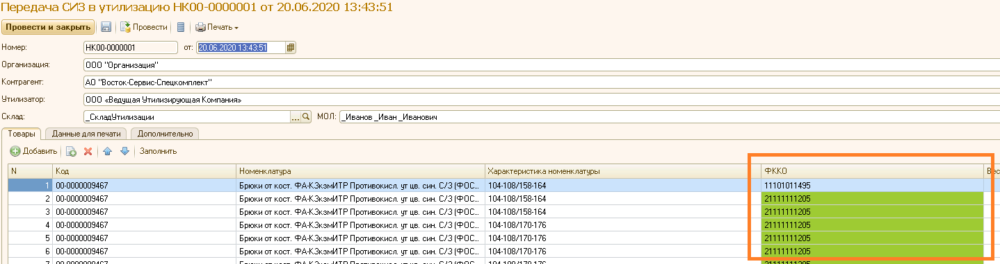
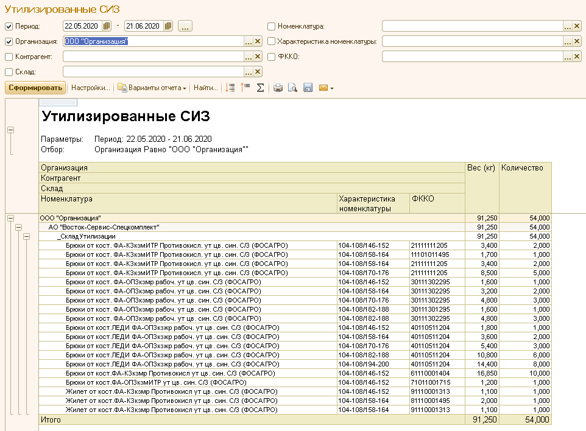

Утилизация отражается документом «Передача СИЗ в утилизацию» в разделе «Обслуживание».
Заполнение документа производится по остаткам номенклатуры с признаком «Подлежит утилизации» на указанном в документе складе.
Если у номенклатуры есть несколько доступных ФККО, ячейка «ФККО» подкрашивается.

При выборе ФККО доступны только привязанные к номенклатуре ФККО согласно регистру «ФККО номенклатуры». Вес в документе заполняется из реквизита номенклатуры «Вес для учета чистки».
После проведения документа производится списание по регистру «Остатки номенклатуры» и производится запись в регистр «Утилизированные СИЗ».
Доступны 2 печатные формы: «Акт (организация - контрагент)» и «Акт (контрагент - утилизатор)». Для их корректного заполнения необходимо заполнить реквизиты на закладке «Данные для печати».
По данным регистра «Утилизированные СИЗ» можно сформировать отчет «Утилизированные СИЗ» из раздела «Обслуживание».
